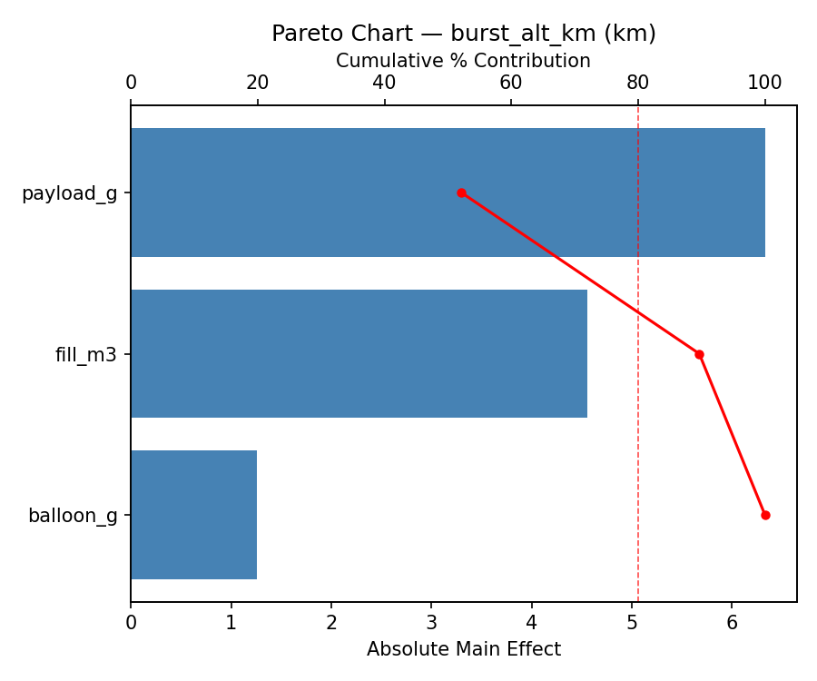
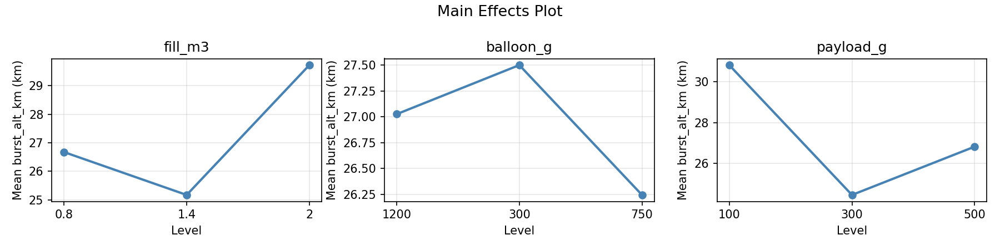
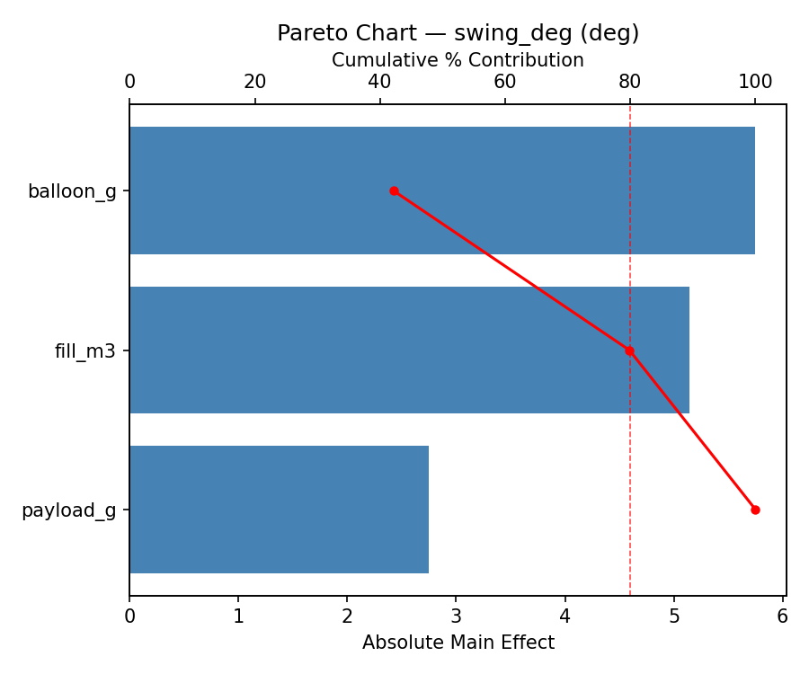
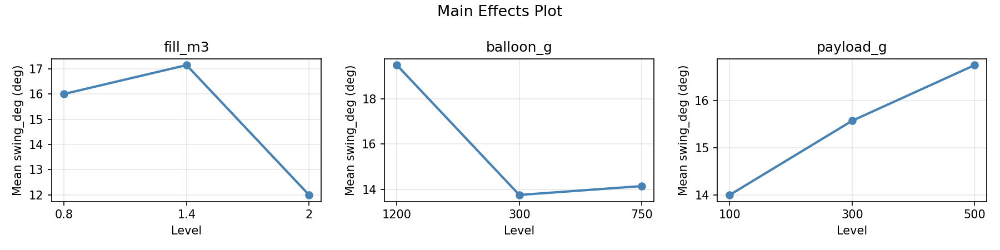
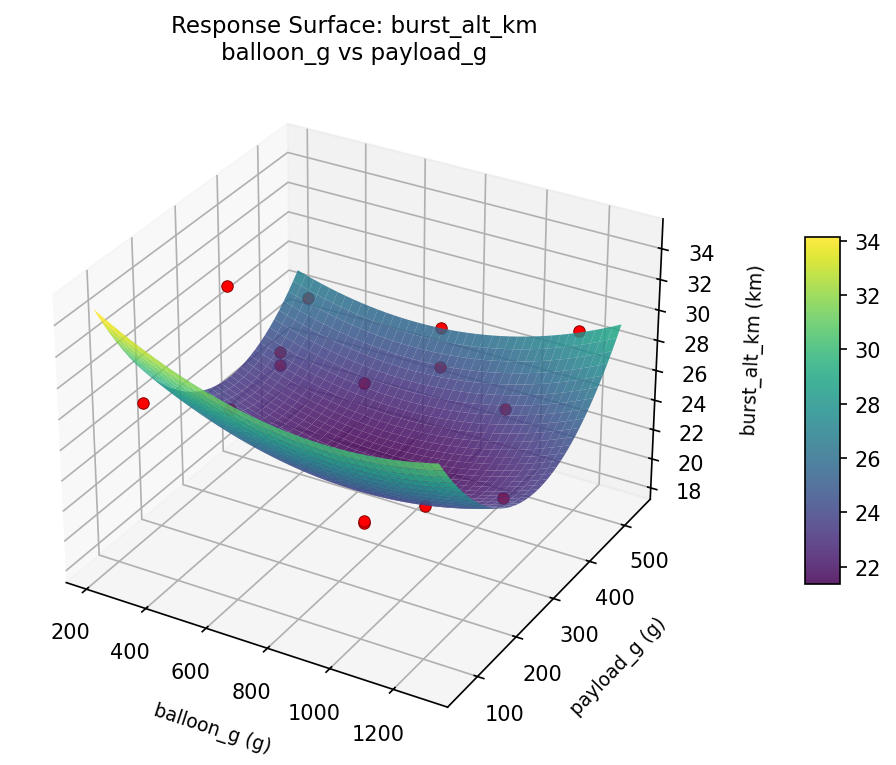
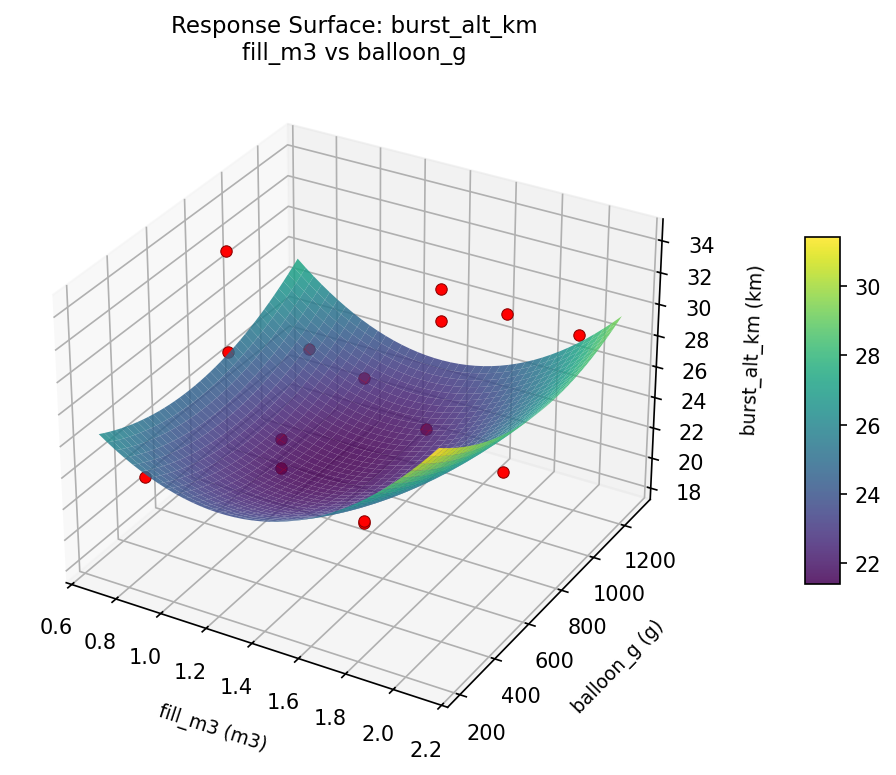
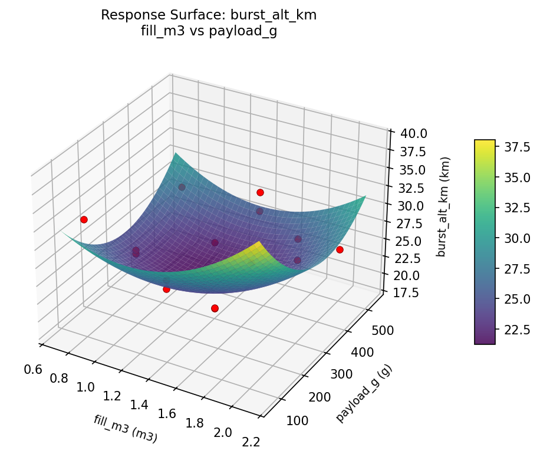
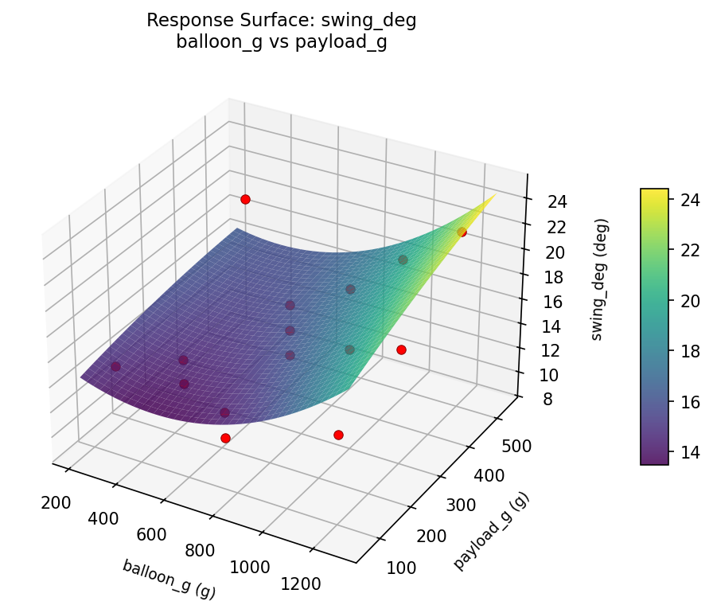
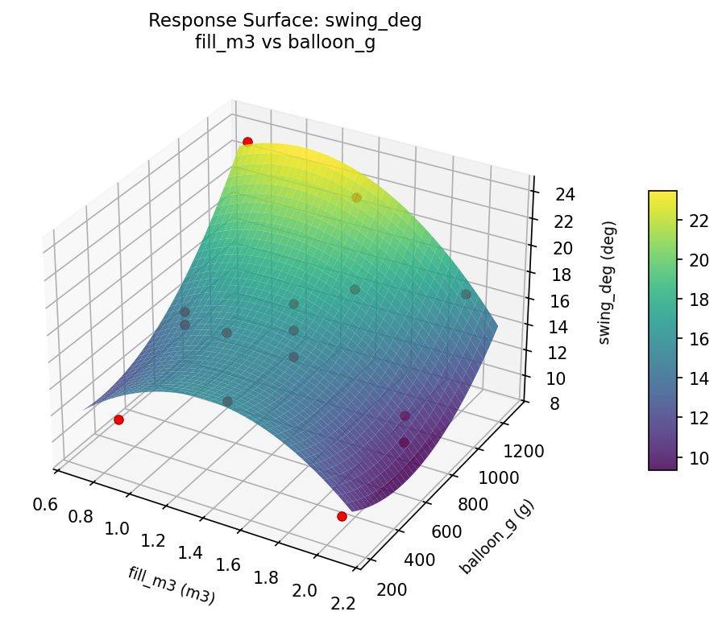
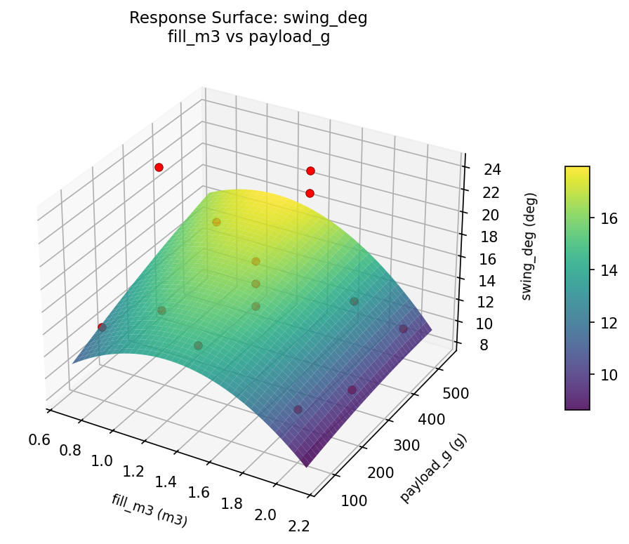

Summary
This experiment investigates weather balloon launch parameters. Box-Behnken design to maximize burst altitude and minimize payload swing by tuning helium fill volume, balloon mass, and payload weight.
The design varies 3 factors: fill m3 (m3), ranging from 0.8 to 2.0, balloon g (g), ranging from 300 to 1200, and payload g (g), ranging from 100 to 500. The goal is to optimize 2 responses: burst alt km (km) (maximize) and swing deg (deg) (minimize). Fixed conditions held constant across all runs include gas = helium, radiosonde = RS41.
A Box-Behnken design was chosen because it efficiently fits quadratic models with 3 continuous factors while avoiding extreme corner combinations — requiring only 15 runs instead of the 8 needed for a full factorial at two levels.
Quadratic response surface models were fitted to capture potential curvature and factor interactions. The RSM contour plots below visualize how pairs of factors jointly affect each response.
Key Findings
For burst alt km, the most influential factors were payload g (52.1%), fill m3 (37.5%), balloon g (10.4%). The best observed value was 34.2 (at fill m3 = 1.4, balloon g = 1200, payload g = 100).
For swing deg, the most influential factors were balloon g (42.1%), fill m3 (37.7%), payload g (20.2%). The best observed value was 9.0 (at fill m3 = 1.4, balloon g = 750, payload g = 300).
Recommended Next Steps
- Run confirmation experiments at the predicted optimal settings to validate the model.
- Consider whether any fixed factors should be varied in a future study.
Experimental Setup
Factors
| Factor | Low | High | Unit |
|---|
fill_m3 | 0.8 | 2.0 | m3 |
balloon_g | 300 | 1200 | g |
payload_g | 100 | 500 | g |
Fixed: gas = helium, radiosonde = RS41
Responses
| Response | Direction | Unit |
|---|
burst_alt_km | ↑ maximize | km |
swing_deg | ↓ minimize | deg |
Configuration
{
"metadata": {
"name": "Weather Balloon Launch Parameters",
"description": "Box-Behnken design to maximize burst altitude and minimize payload swing by tuning helium fill volume, balloon mass, and payload weight"
},
"factors": [
{
"name": "fill_m3",
"levels": [
"0.8",
"2.0"
],
"type": "continuous",
"unit": "m3"
},
{
"name": "balloon_g",
"levels": [
"300",
"1200"
],
"type": "continuous",
"unit": "g"
},
{
"name": "payload_g",
"levels": [
"100",
"500"
],
"type": "continuous",
"unit": "g"
}
],
"fixed_factors": {
"gas": "helium",
"radiosonde": "RS41"
},
"responses": [
{
"name": "burst_alt_km",
"optimize": "maximize",
"unit": "km"
},
{
"name": "swing_deg",
"optimize": "minimize",
"unit": "deg"
}
],
"settings": {
"operation": "box_behnken",
"test_script": "use_cases/264_weather_balloon/sim.sh"
}
}
Experimental Matrix
The Box-Behnken Design produces 15 runs. Each row is one experiment with specific factor settings.
| Run | fill_m3 | balloon_g | payload_g |
|---|
| 1 | 1.4 | 300 | 100 |
| 2 | 1.4 | 750 | 300 |
| 3 | 2 | 750 | 500 |
| 4 | 2 | 750 | 100 |
| 5 | 1.4 | 750 | 300 |
| 6 | 1.4 | 750 | 300 |
| 7 | 0.8 | 750 | 500 |
| 8 | 2 | 300 | 300 |
| 9 | 1.4 | 300 | 500 |
| 10 | 2 | 1200 | 300 |
| 11 | 0.8 | 750 | 100 |
| 12 | 1.4 | 1200 | 500 |
| 13 | 0.8 | 300 | 300 |
| 14 | 0.8 | 1200 | 300 |
| 15 | 1.4 | 1200 | 100 |
Step-by-Step Workflow
1
Preview the design
$ python doe.py info --config use_cases/264_weather_balloon/config.json
2
Generate the runner script
$ python doe.py generate --config use_cases/264_weather_balloon/config.json \
--output use_cases/264_weather_balloon/results/run.sh --seed 42
3
Execute the experiments
$ bash use_cases/264_weather_balloon/results/run.sh
4
Analyze results
$ python doe.py analyze --config use_cases/264_weather_balloon/config.json
5
Get optimization recommendations
$ python doe.py optimize --config use_cases/264_weather_balloon/config.json
6
Generate the HTML report
$ python doe.py report --config use_cases/264_weather_balloon/config.json \
--output use_cases/264_weather_balloon/results/report.html
Features Exercised
| Feature | Value |
|---|
| Design type | box_behnken |
| Factor types | continuous (all 3) |
| Arg style | double-dash |
| Responses | 2 (burst_alt_km ↑, swing_deg ↓) |
| Total runs | 15 |
Analysis Results
Generated from actual experiment runs using the DOE Helper Tool.
Response: burst_alt_km
Top factors: payload_g (52.1%), fill_m3 (37.5%), balloon_g (10.4%).
Pareto Chart

Main Effects Plot

Response: swing_deg
Top factors: balloon_g (42.1%), fill_m3 (37.7%), payload_g (20.2%).
Pareto Chart

Main Effects Plot

Response Surface Plots
3D surfaces fitted with quadratic RSM. Red dots are observed data points.
burst alt km balloon g vs payload g

burst alt km fill m3 vs balloon g

burst alt km fill m3 vs payload g

swing deg balloon g vs payload g

swing deg fill m3 vs balloon g

swing deg fill m3 vs payload g

Full Analysis Output
RSM surface: rsm_burst_alt_km_fill_m3_vs_balloon_g.png
RSM surface: rsm_burst_alt_km_fill_m3_vs_payload_g.png
RSM surface: rsm_burst_alt_km_balloon_g_vs_payload_g.png
RSM surface: rsm_swing_deg_fill_m3_vs_balloon_g.png
RSM surface: rsm_swing_deg_fill_m3_vs_payload_g.png
RSM surface: rsm_swing_deg_balloon_g_vs_payload_g.png
=== Main Effects: burst_alt_km ===
Factor Effect Std Error % Contribution
--------------------------------------------------------------
payload_g 6.3286 1.2091 52.1%
fill_m3 4.5536 1.2091 37.5%
balloon_g 1.2571 1.2091 10.4%
=== Summary Statistics: burst_alt_km ===
fill_m3:
Level N Mean Std Min Max
------------------------------------------------------------
0.8 4 26.6750 4.8411 22.9000 33.4000
1.4 7 25.1714 4.6707 18.4000 29.3000
2 4 29.7250 4.2011 24.4000 34.2000
balloon_g:
Level N Mean Std Min Max
------------------------------------------------------------
1200 4 27.0250 2.8883 22.9000 29.3000
300 4 27.5000 3.4273 23.4000 31.6000
750 7 26.2429 6.3561 18.4000 34.2000
payload_g:
Level N Mean Std Min Max
------------------------------------------------------------
100 4 30.8000 3.5138 27.2000 34.2000
300 7 24.4714 5.0976 18.4000 31.6000
500 4 26.8250 2.0073 24.4000 29.3000
=== Main Effects: swing_deg ===
Factor Effect Std Error % Contribution
--------------------------------------------------------------
balloon_g 5.7500 1.0992 42.1%
fill_m3 5.1429 1.0992 37.7%
payload_g 2.7500 1.0992 20.2%
=== Summary Statistics: swing_deg ===
fill_m3:
Level N Mean Std Min Max
------------------------------------------------------------
0.8 4 16.0000 5.5976 11.0000 24.0000
1.4 7 17.1429 2.9681 14.0000 22.0000
2 4 12.0000 3.5590 9.0000 17.0000
balloon_g:
Level N Mean Std Min Max
------------------------------------------------------------
1200 4 19.5000 4.2032 15.0000 24.0000
300 4 13.7500 4.8563 9.0000 20.0000
750 7 14.1429 2.6095 10.0000 18.0000
payload_g:
Level N Mean Std Min Max
------------------------------------------------------------
100 4 14.0000 1.4142 12.0000 15.0000
300 7 15.5714 4.9281 9.0000 24.0000
500 4 16.7500 5.3774 10.0000 22.0000
Pareto chart (burst_alt_km): use_cases/264_weather_balloon/results/analysis/pareto_burst_alt_km.png
Pareto chart (swing_deg): use_cases/264_weather_balloon/results/analysis/pareto_swing_deg.png
Main effects (burst_alt_km): use_cases/264_weather_balloon/results/analysis/main_effects_burst_alt_km.png
Main effects (swing_deg): use_cases/264_weather_balloon/results/analysis/main_effects_swing_deg.png
Optimization Recommendations
=== Optimization: burst_alt_km ===
Direction: maximize
Best observed run: #15
fill_m3 = 1.4
balloon_g = 1200
payload_g = 100
Value: 34.2
RSM Model (linear, R² = 0.6990, Adj R² = 0.6169):
Coefficients:
intercept +26.7867
fill_m3 -0.2125
balloon_g +3.8000
payload_g -3.5125
RSM Model (quadratic, R² = 0.8950, Adj R² = 0.7060):
Coefficients:
intercept +29.0667
fill_m3 -0.2125
balloon_g +3.8000
payload_g -3.5125
fill_m3*balloon_g +2.6250
fill_m3*payload_g -1.3000
balloon_g*payload_g -0.1250
fill_m3^2 -1.4333
balloon_g^2 -2.3083
payload_g^2 -0.5333
Curvature analysis:
balloon_g coef=-2.3083 concave (has a maximum)
fill_m3 coef=-1.4333 concave (has a maximum)
payload_g coef=-0.5333 concave (has a maximum)
Notable interactions:
fill_m3*balloon_g coef=+2.6250 (synergistic)
fill_m3*payload_g coef=-1.3000 (antagonistic)
Predicted optimum (from quadratic model):
fill_m3 = 1.4
balloon_g = 1200
payload_g = 100
Predicted value: 33.6625
Model quality: Good fit — general trends are captured, some noise remains.
Factor importance:
1. balloon_g (effect: 7.6, contribution: 47.3%)
2. payload_g (effect: 7.0, contribution: 43.7%)
3. fill_m3 (effect: 1.4, contribution: 9.0%)
=== Optimization: swing_deg ===
Direction: minimize
Best observed run: #4
fill_m3 = 1.4
balloon_g = 750
payload_g = 300
Value: 9.0
RSM Model (linear, R² = 0.1823, Adj R² = -0.0407):
Coefficients:
intercept +15.4667
fill_m3 +1.8750
balloon_g -0.1250
payload_g +1.5000
RSM Model (quadratic, R² = 0.8847, Adj R² = 0.6772):
Coefficients:
intercept +13.0000
fill_m3 +1.8750
balloon_g -0.1250
payload_g +1.5000
fill_m3*balloon_g +2.2500
fill_m3*payload_g +4.0000
balloon_g*payload_g -1.0000
fill_m3^2 +4.6250
balloon_g^2 +1.1250
payload_g^2 -1.1250
Curvature analysis:
fill_m3 coef=+4.6250 convex (has a minimum)
balloon_g coef=+1.1250 convex (has a minimum)
payload_g coef=-1.1250 concave (has a maximum)
Notable interactions:
fill_m3*payload_g coef=+4.0000 (synergistic)
fill_m3*balloon_g coef=+2.2500 (synergistic)
balloon_g*payload_g coef=-1.0000 (antagonistic)
Predicted optimum (from quadratic model):
fill_m3 = 2
balloon_g = 750
payload_g = 500
Predicted value: 23.8750
Model quality: Good fit — general trends are captured, some noise remains.
Factor importance:
1. fill_m3 (effect: 6.5, contribution: 61.7%)
2. payload_g (effect: 3.0, contribution: 28.8%)
3. balloon_g (effect: 1.0, contribution: 9.5%)